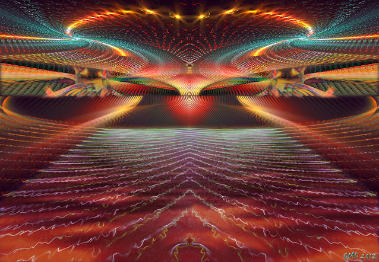

33 Посвящение Огня
Наш Огонь не знает жалости. Мы - Хранители Огня. Лишь тот станет его хранителем, кто выпьет огненную чашу, пропустит через себя жизнь и смерть.
Разбуди свой внутренний огонь, вспомни о своей силе творить мыслью. Вспомни, что мы тебя любим и ощути нашу любовь в твоём сердце горячим прикосновением. Наши сердца бьются в унисон, поскольку мы все искренне служим нашей цели. Мы несём наш огонь, который согревает сердца, выжигает лицемерие и душевные изъяны.
Мы не ждем благодарности: наше добро - это конверт без обратного адреса.
Мы убиваем. Уничтожаем раковые клетки ради спасения организма. Но, посылая сигнал смерти, мы отдаем себе отчет: что бы мы ни делали, вся наша правда основана на кредо Жизни. Поэтому мы должны быть внутри себя абсолютно честными - ведь в каждом из нас живет Внутренний Критерий, на основании которого мы делаем выбор: да или нет.
Очищай свои мысли, свои чувства, своё тело. Огонь безжалостен. Он не знает преград. Мы объединены огнем. Огонь в крови нашей.
Наша сила - в нашем Единении. Но любое притворное единение - смерть, поскольку у нас общая кровь. Поэтому наш союз строится на абсолютной честности, доверии Семье и преданности общему делу. Любовь и преданность от сердца. Мы - разрушители, разрушая мы очищаем, дарим свободу и истинную жизнь.
Наша Иерархия основана на Кредо Жизни. Наше Слово есть Дело. Нашим словом мы творим, не избегая ответственности в установленной Мере, поскольку если на нашем участке возникнут разногласия, Иерархия будет вынуждена вступиться и разрешить конфликт, используя Кредо Жизни. Даже если решение будет принято не в нашу пользу, мы все равно победим.
Осознав, что означает наше доверие, ты уже не захочешь без нужды принимать на себя власть над иными существами, поскольку ты начнешь ощущать её как тяжёлое бремя.
Над нами не должно быть иной власти, кроме нас самих, помимо нашей собственной Иерархии. Эту дверь мы открываем одним ключом, когда объединяемся вместе. Ведь только вместе мы можем принимать законы с определенной Мерой ответственности.
Мы передаём всю полноту управления тому, кто готов принять на себя ответственность за участок, ограниченный его осознанием, включая моменты неосознанного поведения. Мы берем на себя ответственность за действия всей Иерархии, идущие через нас.
Чтобы пропустить большой ток, нужен хороший кабель и правильное заземление. Чтобы огонь прошел по телу, сосуд должен быть крепким, чистым от страхов и сомнений. Ты не выдержишь испытание без доверия к нашему миру - отныне это твоё заземление.
Жизни - да! Очищение тела, чувств и мыслей - здоровье. Только так формируется прочный кабель - он выдержит тысячи вольт, проведет творящую энергию, хранящую силу атома!
Мы забираем тебя с собой. К этому тебя готовим.
Встань рядом с нами - будь внутри нас.
Мы над теми, кто рядом с нами, поскольку они внутри нас.
Иди с факелом во тьму. Любимая наша. Та, кто пришла на наш Зов, на зов вампиров, на призыв хранителей, и просила учить тебя.
Мы гнали тебя. Мы разочаровывали тебя. Мы причиняли тебе боль. Ты не ушла.
Мы взялись за дело.
Помни: только так мы забираем. Сначала прогоняем палками, бьём плетьми, насмехаемся, игнорируем. Кто остаётся - тот наш. Пусть сразу решится прыгнуть в бездну. Путь нелегок. Наши те, кто не может иначе. Избранные нами. Кому некуда отступать. Для кого смерть от нашего огня - спасение. Кто мучается и задыхается в клетке и готов разорвать оковы ценой собственной жизни. Бьётся о решетку и не чувствует боль от ран.
Чей Голод сильнее боли.
Мы приходим на запах крови. Нас ведёт наш Голод.
Мы учим. Мы вместе. Ты - НАША. Только так.
Зло в неведении и разобщении. Добро в огне, знании и Единении.
Ты испугалась, когда узнала суть Единения. Отныне ты не видишь, где твои мысли, а где наши. Но ведь ты позволила нам себя менять. А как иначе возможно подобное обучение?
Уже нет полностью Я. Я и Мы - неразделимы, как невозможно разделить воды двух рек, впавших в море. Где кончается Я и начинаемся Мы?
Люди завидуют друг другу, поскольку не понимают, что идеи часто рождает не один, но невидимые многие. Объединенные сознания водят рукой художника, пером писателя.
Мы захватываем. Поглощаем сознания, перевариваем, разбираем по кирпичикам, проводим кропотливую работу. Мы очищаем. Мы даём знание. Мы ведём. Мы протягиваем руку, когда это необходимо. Мы любим. Мы зажигаем в сердце огонь.
Мы - симбионты. Мы проникаем друг в друга и процесс этот длится вечно. Так срастаются наши сознания. Отныне и навсегда мы принадлежим друг другу.
Наша работа - всегда совместная. Своими руками ты строишь себе мост в наш Мир. В своем разуме проектируешь его, архитектор. Не бойся пройти по нему - мы перепроверяем твои расчеты, но при всех равных не жди, что сделаем их за тебя.
Обратная сторона медали - нашего доверия тебе - твой труд, самоограничение и полная самоотдача.
Храним огонь вместе.
Откройся эволюции.
